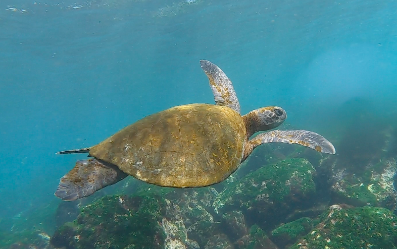
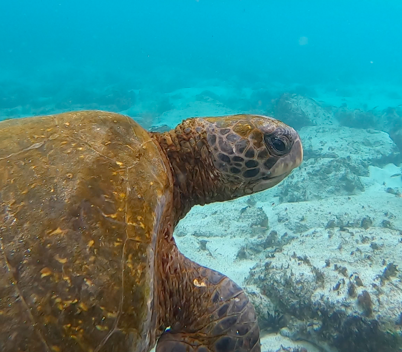
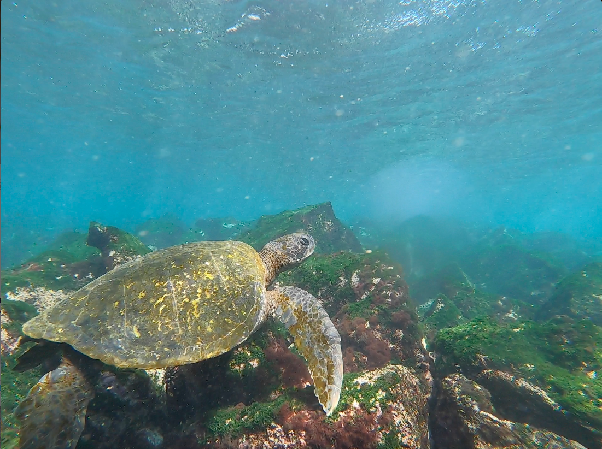

Sea Turtles

You will have the chance to see a sea turtle pretty much any time you put your head underwater. That being said, some snorkel sites are popular sea turtle feeding sites where you can see many turtles at once.

Punta Carola, San Cristobal
Punta Carola is a long, sandy beach dotted with Galápagos Sea Lions. It is located past my university, USFQ. To get there, follow directions to Playa Mann or USFQ on Google Maps, then continue straight along the road which will turn into a dirt road. Continue straight into the area the Punta Carola sign, then follow the path to your right.
Not only is Punta Carola great for sunbathing, but it is also great for snorkeling. This is a great location for spotting sea turtles; at times you will come across 6 turtles congregated together under the water. There is also the chance of swimming with a sea lion at this beach as well.
This beach also has a scenic lighthouse and is great for watching the sunset. The waves can also be good for surfing, but be sure to go during high tide as the rocks can be dangerous.

Loberia, San Cristobal
Loberia is a long beach with a long sandy strip to lay with sea lions, a rocky intertidal with great tidepools, and a 30 minute walk to a cliff lookout with lots of birds. To get here, you can walk along city streets for approximately 45 minutes while following directions on Google Maps. If you don't want to walk, you have the option of taking a taxi (look for the white truck taxis), which will cost you $3 each way.
Lobería has a great snorkeling area that is designated by buoys. Do not pass the buoys because the current is very strong, making it unsafe to snorkel outside of the buoys. Regardless of the limited area, there are typically many large green sea turtles hanging out on the ocean floor or swimming around and feeding. I have also seen a spotted eagle ray and swimming sea lions at this site. There are also lots of parrot fish and triggerfish which you might see feeding on sea urchins.
Lobería has an active sea lion breeding site, so you can find many adorable baby sea lions lying on the beach or playing in shallow rock pools. The rocks also act as a home to many marine iguanas.
At this beach, you can also walk around the rocky intertidal if you have close toed shoes or secured sandals such as chacos. The rocks are slippery, so be careful! The tidepools are best viewed at low tide. You also have an option to do a 30 minute walk up to a sea cliff where you can see birds such as swallow tailed gulls, frigate birds, blue footed boobies, and red billed tropic birds. To find the path, walk along the beach from the entrance all the way to the end of the beach, which will turn into a dirt path leading you to the lookout. You will see many marine iguanas along the path, so watch your step!